| 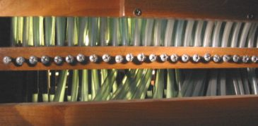 | |
Stlačený vzduch je do vedení vpouštěn (tlakový systém)
či vypouštěn (výpustný systém) a jeho pohyb je řízen několika druhy ventilů.
Výsledkem jeho proudění v konduktech je působení na další prvky traktury,
nejčastěji míšky či membrány. Vzdálenosti, na které je vzduch schopen
ovládat další člen, závisí mimo jiné na jeho tlaku . |
Ventily jsou prvky, které otevírají
či uzavírají vstupní otvor do navazujícího vedení. V závislosti na konstrukci
a funkci ventilu je možné ve varhanářství nalézt ventily v mnoha obměnách.
|
Tlakové ventily, vpouštějící stlačený vzduch ze vzduchovodu
do vedení mohou být tvořeny klapkou, která je na vstupní otvory vedení
přitlačována pružinou. Klapka na této animaci představuje vlastně jednoramennou
páku, upevněnou na jednom z konců a spojenou pomocí táhla např. s klávesou.
Působením příslušné síly na ventil se klapka odklopí, odkryje vstupní
otvory vedení a stlačený vzduch z komory může proudit do rourek, po uvolnění
se klapka vrátí do původní polohy a přívod vzduchu se uzavře. |
|
Pro eliminaci tohoto jevu je možné ventil upravit tak, aby
se klapka nadzvedávala rovnoměrně po celé délce např. podobně jako na
této animaci. Klapka je stabilizována vedením na dvou bodcích na koncích
klapky a do původní polohy se vrací pomocí pružiny nebo vlastní vahou
a tlakem vzduchu v komoře nad klapkou po zániku síly, která ji nadzvedla. |
|
Na této animaci je příklad přesuvného ventilu. Stlačený vzduch
z komory se dostane přes vedení dále v okamžiku, kdy se pomocí táhélka
přesune pohyblivý bloček ve ventilu. V bločku je zespod vyfrézován kanálek,
který ve vysunuté poloze táhla spojí výstupní otvor z kanálu se vstupním
otvorem vedení. Obráceně – zasunutí táhélka způsobí přesunutí bločku do
polohy, kdy se jednotlivé otvory a kanálek nekryjí a průchod vzduchu se
uzavře. (Tato konstrukce je často využívána ve volných kombinacích – to
jsou ony „figurky člověče nezlob se“ u rejstříkových skolopek). |
Výpustné ventily jsou druhým
typem ventilů, které varhanářství používá. Ventil tohoto druhu v klidovém
stavu uzavírá výstupní otvory trubiček, ve kterých je stlačený vzduch.
Při působení odpovídající síly (např. pomocí klávesy) na klapku se tato
vychýlí a vypustí z rourek shromážděný vzduch. |
Kromě výše popsaných ventilů, používaných pouze k
vpuštění či vypuštění vzduchu z jednoho prostoru do druhého varhanářství
používá i celou řadu ventilů dvojčinných s kombinovanou funkcí tlakově
– výpustnou či naopak. |
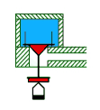  |
Na těchto obrázcích je ventil
s funkcí tlakově – výpustnou. V klidovém stavu (první obrázek) jeho horní
část – kuželka – uzavírá vstup stlačeného vzduchu z komory do konduktu.
Současně dolní ventil – nazývaný podle funkce kontraventil – v otevřené
poloze umožňuje volný únik vzduchu z konduktu. |
|
Nadzvednutí ventilu (druhý obrázek) způsobí otevření kuželkového ventilu a vpuštění vzduchu do konduktu. Současně spodní kroužek (kontraventil) uzavírá výfukový otvor a znemožňuje tak únik vzduchu z konduktu, který může beze ztráty tlaku odvést vzduch z komory ke spotřebiči. Činnost ventilu této konstrukce (ve zpomaleném tempu) objasňuje tato animace, konstrukce a funkce kuželkového ventilu je pak podrobněji popsána v části, věnující se konstrukci kuželkové vzdušnice). |
| 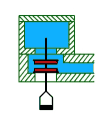 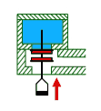 |
Druhým typem dvojčinného ventilu je ventil s funkcí výpustně
– tlakovou. V klidovém stavu (první obrázek) umožňuje ventil volné proudění
vzduchu z komory do konduktu (přes horní vstupní otvor, dolní – výstupní
otvor je současně zakryt druhým kroužkem ventilu). Vzduch je konduktem
veden ke spotřebiči. |
Zapůsobením odpovídající síly na ventil dojde k jeho nadzvednutí (druhý obrázek), horní kroužek uzavře vtokový otvor do konduktu což ukončí proudění vzduchu z komory do konduktu. Současně se otevře spodní výstupní (výpustný či výfukový) otvor v konduktu a vzduch, který byl v něm až dosud stlačen, unikne do okolí (dojde k vyrovnání tlaku). Jak to funguje (opět zpomaleně) představuje animace napravo. |
Ventily, pracující na jiném než „mechanickém“ principu
(všechny výše popsané ventily mají v dráze vzduchu nějaký pohyblivý mechanický
element – klapku, kuželku, tyčku s kroužky…) jsou ventily membránové.
U těchto ventilů je prvkem, který řídí pohyb vzduchu membrána, vyrobená
nejčastěji z tenké elastické kůže (dnes i z plastů). |
Příklad membránového ventilu
je na této animaci. Jedná se o ventil s mechanickým ovládáním. Do dřevěného
bločku oblepeného kůží (která tvoří membránu) jsou přivedeny dvě rourky
(v tomto příkladě). |
Pokud se páka nachází v
poloze, ve které přitiskne membránu k výstupnímu otvoru pravé rourky,
nemůže vzduch v této rource stlačený proudit dále (k levé rource). Teprve
po nadzdvihnutí páky se nadmutím membrány vytvoří kanál, kterým vzduch
proudí k druhé rource (kanál tvoří z jedné strany dřevěný bloček s otvory
a z druhé strany vyklenutá membrána). |
Obdobně funguje i pneumaticky řízený membránový ventil.
Rozdíl je jen ve způsobu přitisknutí membrány k vstupním a výstupním otvorům
rourek připojených k dřevěnému bločku (kostičce) ve ventilu. U mechanického
ovládání byla membrána stlačována pákou, u pneumatického se o totéž stará
stlačený vzduch. |
Tato animace znázorňuje
konstrukci ventilu tohoto typu. Pokud ve vzduchové komůrce není stlačený
vzduch (ventil jako celek otevřen) není membrána přitlačována k otvorům
rourek. Pokud se v jedné z rourek v tomto okamžiku objeví vzduch pod tlakem,
může pod nadmutou membránou volně procházet k druhé rource. |
Tímto způsobem vytvořený
kanál může být zablokován vpuštěním stlačeného vzduchu do komůrky. V tomto
případě se membrána přitiskne na otvory rourek a zlikviduje kanál pro
proudění vzduchu (ventil jako celek uzavřen) a ani vpuštění stlačeného
vzduchu do jedné z rourek neumožní jeho přepuštění do druhé rourky. Pro
spolehlivé uzavření ventilu této konstrukce je nutné, aby tlak (ovládacího)
vzduchu v komůrce byl větší než tlak (pracovního) vzduchu v rourkách,
v opačném případě by ventil nemohl spolehlivě uzavřít jeho průchod. |
V uvedených příkladech byly pro jednoduchost a názornost
uvedeny jen ventily s dvojicí rourek, v běžné varhanářské praxi jsou používány
konstrukce, u nichž jediný ventil ovládá i více vedení současně. Membránové ventily jsou často montovány v konstrukčních skupinách. Nejčastěji mají podobu dřevěné skříňky (komůrky) s dvěmi řadami rourek. Každá dvojice rourek má svou membránu, ty jsou ale umístěny ve společném prostoru se stlačeným vzduchem. Naplnění této komory vzduchem umožňuje současné vypnutí či zapnutí všech ventilů (membrán). |
Speciálním druhem ventilů, které nalezneme zvláště
u nástrojů se složitými pomocnými zařízeními (kolektivy, kombinace, crescendo)
jsou jednocestné ventily (zpětné ventily). Jejich konstrukce umožňuje
proudění vzduchu přes ventil jen v jednom směru, v opačném směru se ventil
automaticky uzavírá (pneumatická „dioda“). |
Princip funkce zpětného ventilu ukazuje tato animace.
Ventil představuje nejčastěji klapka ze silnější kůže, pokud se jedná
o rozměrnější ventil (např. plnící ventily v měchu), je kůže plošně vyztužena
naklíženým dřevěným špalíčkem. Animace ukazuje stlačený vzduch, který
vstupuje od zdroje na levé straně a volně prochází ke spotřebiči na pravé
straně ventilu. Pokud se tlak vzduchu na straně spotřebiče (vpravo) zvýší
nad hodnotu tlaku v přívodu zleva, klapka se přitiskne k výstupnímu otvoru
a znemožní automaticky zpětný tok ve směru zprava doleva. |
Zřídkakdy se zpětné ventily vyskytují v traktuře
samostatně, zpravidla jsou využívány v případě, kdy k jednomu spotřebiči
(akčnímu členu traktury, např. tónovému či rejstříkovému ventilu) vede
vzduch od několika možných zdrojů (ovládacích prvků) a zároveň je nutné
zamezit zpětnému toku tohoto vzduchu k ostatním zdrojům a tím jejich vzájemnému
ovlivňování. |
V nejjednodušším případě (na ilustraci napravo) k
jednomu spotřebiči (rourka směrem dolů) vede vzduch od dvou možných zdrojů
(zleva a zprava). Při vpuštění vzduchu do ventilu např. zleva se odklopí
levá klapka a vzduch po průchodu komůrkou ventilu volně proudí do výstupní
(dolní) rourky. Současně se tlakem téhož vzduchu přitiskne pravá klapka
a uzavře otvor pravé rourky a naopak. Takový zpětný ventil může být tvořen
samozřejmě i skupinou tří, čtyř či více klapek (přívodů), podle potřeb
konstrukce traktury. |
Pokud jsou přívody jen dva, je možná konstrukce s
vahadlovou klapkou. Výstupní otvory přívodních rourek jsou v tomto případě
uzavírány jedinou klapkou, tvořenou koženým jazýčkem, který se v komůrce
trojúhelníkového průřezu vychyluje stlačeným vzduchem od jedné z rourek
(levé či pravé) tak, že nečinnou rourku uzavře a vzduch od rourky pod
tlakem se bez překážek dostane ke spotřebiči. |
|
Zajímavá je konstrukce zpětného ventilu se dvěmi přívody,
který využívá k uzavírání vtokového otvoru nečinné rourky kuličku z lehkého
materiálu. Výstupní otvory rourek tvoří malé jamky, do kterých přesně
zapadne volně se pohybující kulička tak, že zcela znemožní průchod vzduchu
(ucpe otvor). Přivedení vzduchu do druhé z trubiček způsobí přesun kuličky
do sousední jamky a uzavření ventilu v opačném směru. |
|
Na tomto obrázku je znázorněna nejčastější konstrukce míšku,
který tvoří kožený polštářek se slepenými hranami (někdy jsou hrany polepeny
lepenkou nebo vyztuženy olověným plíškem). Míšek je přilepen pomocí spodního
lepenkového kroužku k výstupnímu otvoru vzduchového kanálku, vytvořeného
nejčastěji v dřevěné liště a přivádějícího do míšku vzduch. |
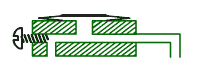 |
| 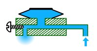 | Na horní straně míšku je
přilepena destička (roznosová ploténka), která tlačí na následný element
traktury (nejčastěji zvedá kuželku ventilu). Celek pracuje na základě
fyzikálních zákonů (pamatujete si na hydraulický lis, kterým je možné
pomocí malého pístku stlačit plyn či kapalinu tak, že velký píst může
zvedat obrovské závaží?). I malý tlak v rource tak po znásobení plochou
ploténky dokáže nadzvednout i větší kuželku ventilu. Ve zvednuté poloze
zůstane po dobu, po kterou je přiváděn do kanálku v liště vzduch. Poté
zbylý vzduch unikne dalším – výstupním (výfukovým) otvorem a míšek splaskne. |

Velikost nadmutí míšku (a tím i dráhu nadzvednutí
dalšího elementu) lze nastavit regulačním šroubkem ve výfukovém otvoru
v liště pod míšky. Změnou světlosti kanálku lze nastavit množství a tlak
vzduchu v míšku. Je-li zcela vyšroubován (příklad vlevo), míšek se plní
pomalu ale rychle splaskne při přerušení přívodu vzduchu, u zcela zašroubovaného
(vpravo) se naopak rychle nadme a pomalu splaskává. Optimální vyregulování
přináší shodné časy nadmutí i splasknutí. |
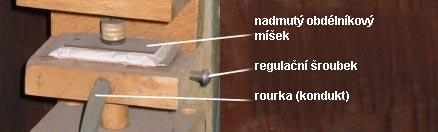
Často můžeme potkat konstrukce bez regulačního šroubku
(většina dále uvedených příkladů je pro jednoduchost bez regulace). Někteří
varhanáři (u nás např. Krnov) používali pro regulaci míšků zápichy (vpichy
– jehlou propíchnuté otvory do olověného konduktu těsně pod míškem). Množstvím
a velikostí těchto otvorů docilovali stejného způsobu regulace, jako šroubkem
na výše uvedených ilustracích. Nevýhodou bylo obtížnější a těžkopádnější
nastavení optimálního tlaku (otvor navíc se musel zaslepit např. přelepením
naklíženou tkaninou či lepící páskou, drobné zápichy se snadno zanáší
jemným prachem a takto konstruovaná traktura bývá často poruchová). |
Větší míšky, určené k vyvinutí
větší síly (ovládání velkých ventilů, přesouvání zásuvek apod.) jsou zpravidla
konstruovány stejně, jako klínové měchy. Konstrukci a funkci takového
měchu ukazuje vedlejší animace. Míšek tvoří dvojice obdélníkových dřevěných
destiček, které jsou pohyblivě spojeny v jedné z hran (pantem). Mezi destičkami
je zpravidla tkaninou zpevněný kožený záhyb (buďto ve tvaru polštáře nebo
skládaný – harmonikový). Po jeho naplnění se destičky od sebe rozevřou
a vytvoří klín. Animace představuje klínový míšek, řízený dvojčinným ventilem
(ventil pro naplnění s kontraventilem pro rychlé vyprázdnění). |
Míšky výpustné tvoří druhou velkou
skupinu míšků, používaných ve varhanách. V klidovém stavu jsou naplněny
vzduchem. Když se vzduch vypustí splasknou a vykonají příslušnou práci,
např. otevírají ventily či přesouvají zásuvky. Výpustné míšky najdeme
většinou uvnitř vzduchovodů (vzdušnic, vzduchových kanálů, komor či vzdušníků).
Stejně jako naplňované míšky mohou mít i míšky výpustné celou řadu podob. Klínový míšek, popsaný již výše jako naplňovaný, může být použit rovněž jako výpustný. Konstrukce je v obou případech shodná, liší se pouze ve funkci. |
|
Tato animace přibližuje činnost výpustného
klínového míšku. Míšek je umístěn uvnitř komory, naplněné stlačeným vzduchem.
V klidovém stavu je míšek naplněn vzduchem přes řídící ventil. V této
chvíli jsou tlaky vzduchu vně i uvnitř míšku vyrovnány, míšek je v roztaženém
stavu udržován pružinou, přitlačující míškem ovládaný velký klapkový ventil
(jako příklad použití).
Po nadzdvižení řídícího dvojčinného ventilu se jednak uzavře otvor, kterým byl až dosud míšek naplňován stlačeným vzduchem z komory, jednak se otevře spodní výpustný otvor, kterým se tlak vzduchu v míšku vyrovná s tlakem okolním (atmosférickým). Rozdíl tlaků v komoře a míšku způsobí jeho stlačení, horní deska míšku se sklopí a stáhne s sebou míškem ovládaný klapkový ventil, který vpustí tlakový vzduch dále ke spotřebiči. Uvolnění ovládacího ventilu způsobí jeho klesnutí (vlastní vahou), uzavření výfukového otvoru a zpětné naplnění míšku, jehož horní deska se nadzvedne a řízený klapkový ventil se opět uzavře. Celek tak přejde zpět do klidového stavu. |
Popsanou konstrukci tohoto typu nalezneme nejčastěji v ovládání větších ventilů (např. rejstříkových pro zapínání hlasů v podélných vzdušnicích (s rejstříkovými kancelami) nebo při ovládání tónových ventilů ve vzdušnici, spolupracující s pneumatickou hrací trakturou. Válcové (soudečkové, tobolkové) míšky jsou další variantou výpustných míšků. Typické využití představuje následující obrázek (spojení válcového míšku s výpustkovým ventilem). |
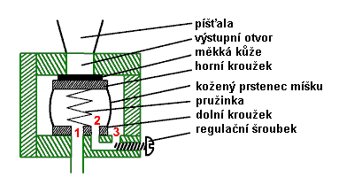
Válcový míšek tvoří dvojice tuhých kroužků (např.
dřevěných, představující víčko a dno válce), které jsou oblepeny prstencem
z elastické kůže. Horní kroužek je shora polepen měkkou kůží a představuje
současně ventil uzavírající výstupní otvor, vedoucí ke spotřebiči (na
tomto příkladě k píšťale, ale může to být i další, větší míšek či vedení).
V dolním kroužku jsou dva otvory (1,2), jejichž funkce bude popsána v
dalším textu. Ve dně kanálu, na které je celá sestava míšku dolním kroužkem
přilepena je ještě jeden otvůrek (3), jehož světlost lze měnit pomocí
regulačního šroubku. Míšků bývá v jednom kanále zpravidla celá skupina
a podle tlaku vzduchu v řídících otvorech (1) ovládají přívod vzduchu
ke spotřebičům (např. píšťalám jednoho rejstříku, pak jsou umístěny přímo
v rejstříkové kancele). Následující obrázky objasňují funkci válcového
míšku: |
| 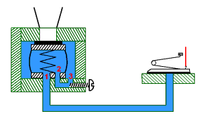 | Klidový stav. Tlak vzduchu
vně i uvnitř míšku je vyrovnaný (míšek je spojen s okolím, tj. se vzduchem
uvnitř kanálu přes kanálek v jeho dně, tlak se vyrovná přes otvory 3-2).
Horní kroužek s koženým polepem je přitisknut pružinkou na výstupní otvor
a ten je tak uzavřen. |
| 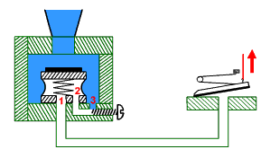 | Otevřením řídícího ventilu
způsobí snížení tlaku vzduchu uvnitř míšku, který se po chvíli vyrovná
s atmosférickým (vzduch z míšku unikne otvorem 1). Vyšší tlak uvnitř kanálu
(oproti atmosférickému) způsobí stlačení míšku a po překonání síly pružiny
horní kroužek poklesne a vpustí vzduch dále ke spotřebiči. |
Uzavření výpustného (řídícího) ventilu způsobí návrat do výchozího
stavu (první obrázek). Stlačený vzduch z kanálu bude proudit kanálkem
mezi otvory 3-2 a postupně naplní míšek (vyrovná tlak uvnitř a vně míšku).
Horní deska, tlačená zespod pružinkou uvnitř míšku se nadzvedne, přitlačí
se k výstupnímu otvoru a uzavře tok vzduchu ke spotřebiči. Regulační
šroubek umožňuje nastavit rychlost vyrovnávání tlaků a tím i časy nutné
k stlačení či roztažení míšku (otevření či uzavření výstupního otvoru).
Při vyšroubovaném šroubku teče vzduch z kanálu do míšku rychleji, takže
se rychleji zpátky naplní (uzavře otvor) a naopak. Opři optimálním nastavení
jsou oba časy stejné. Místo válcového míšku lze ve výpustném systému použít i membránu: |
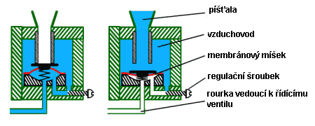
Membránový ventil je tvořen koženou membránou (jako
náhražka se dnes používají i plastové fólie), přilepenou po celém obvodě
na speciálně tvarovaný dřevěný bloček s prohlubní uprostřed. Podobně jako
u válcového míšku i zde membránu v nadzdvižené poloze pomáhá udržet malá
pružinka. Podle tlaku vzduchu pod membránou (stejně jako u válcového míšku,
stejnou funkci má i regulační šroubek) se membrána pohybuje nahoru či
dolů a ucpává či uvolňuje výstupní otvor z kanálu ke spotřebiči. Výhodou
membránového ventilu je rychlá a přesná funkce, nevýhodou je častá poruchovost
(praskání membrán i pružinek vyřadí ventil z funkce a ten zůstane trvale
otevřen, což způsobí např. trvalé znění některé píšťaly). Válcový míšek i membrána mohou být použity i v dvojčinném ventilu vpustně – výpustném (princip funkce pro oba typy je shodný, liší se jen konstrukce membrána/míšek). Uspořádání a funkce je obdobná jako u výše popsaných jednočinných ventilů, jiné je jen uložení míšku: |

Míšek je přilepen k horní stěně komůrky se stlačeným
vzduchem. Pohyblivý je tedy spodní kroužek. K tomuto kroužku je připevněna
kuželka dvojčinného ventilu (se dvěmi kroužky). V klidovém stavu je řídící
(výpustné vedení nahoře kanálku) uzavřeno, tlak v míšku je shodný s tlakem
v komůrce a ventil je (vlastní vahou) v dolní poloze. Přívod vzduchu ke
spotřebiči je uzavřen a navíc díky otevřenému kontraventilu je tlak ve
vedení ke spotřebiči vyrovnán s atmosférickým. |
|
Při otevření řídícího ventilu (mimo obrázek) stlačený vzduch
z míšku unikne přes otevřenou rourku a tlak se vyrovná s atmosférickým.
Tlak vzduchu uvnitř komůrky míšek stlačí a ten nadzvedne k němu připojený
dvojčinný ventil. Jeho horní kroužek otevře výstupní otvor z komůrky k
vedení ke spotřebiči a spodní kroužek (kontraventil) uzavře výfukový otvor.
Vzduch z komůrky proudí ke spotřebiči. Regulační šroubek v horní části
komůrky má stejnou funkci jako v předchozích příkladech – slouží k precizní
regulaci časů zavírání a otevírání ventilu. |
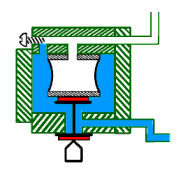 |
Posledním důležitým elementem pneumatické traktury
je relé. Umožňuje pomocí malé energie řídicího vzduchu
otevřít ventil, který do připojeného vedení vpustí čerstvý vzduch s větší
energií. Nutnost použití relé roste s velikostí nástroje (se vzdálenostmi,
na které je nutné vzduchem ovládat). Jen výjimečně najdeme nástroje, ve
kterých by nebylo použito (kde by byl v traktuře jen řídící ventil v hracím
stole, rourka vedení a přímo ventil ve vzdušnici). Omezení vzdálenosti
vyplývá z fyzikálních vlastností stlačeného vzduchu, které jsou blíže
popsány v části popisující pneumatickou hrací trakturu. Zde si tedy popíšeme
konstrukci a princip samotného relé: |
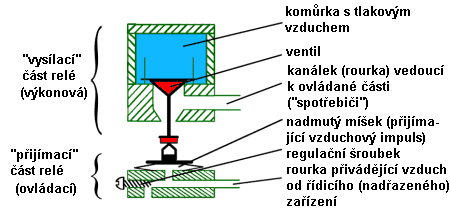
Relé se skládá ze dvou hlavních, navzájem vázaných
částí. Jedna část je ovládací (z vnějšího pohledu je ji možno nazvat přijímací
– přijímá impuls – povel od nadřazeného zařízení) a druhá ovládaná (výkonová,
vysílací – předává posílený impuls dále). Ovládací (příjímací - spodní) část relé je nejčastěji tvořena klasickým naplňovaným míškem, do něhož je rourkou přiveden vzduch od nadřazeného ventilu (spíše ventilku, např. od klávesy apod.). Rychlost činnosti míšku lze zpravidla regulovat (viz předchozí popis práce míšku), zde je pro zjednodušení regulace vynechána. V horní – ovládané výkonové části je kanál (komůrka) se stlačeným vzduchem a ventil (např. kuželkový) uzavírající v klidovém stavu otvor do výstupního vedení (např. k píšťale nebo dalšímu relé v řadě). |
|
Po přijetí tlakového impulsu ovládací rourkou (např.
po stisku klávesy v hracím stole) se nadme míšek, nadzvedne kuželku a
ta vpustí stlačený vzduch z komůrky do výstupní trubičky (k dalšímu relé
nebo, jak bylo výše uvedeno, např. k píšťale, pak je ventil v relé současně
výkonným - akčním členem – posledním v řadě způsobujícím ozev tónu).
Relé je ve varhanách montováno zpravidla ve skupinách. Na fotografiích je samostatné relé a skupina relé na společné liště (ke každému vede zdola olověná rourka, kuželky jsou ve společné komoře): |
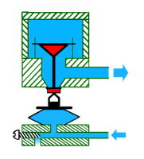 |
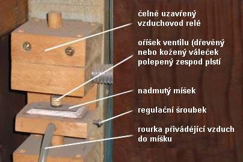

Z výše popsaných elementů jsou ve varhanách sestaveny
pneumatické skupiny, jejichž úkolem je otevírání ventilů a přenos pohybu
na větší vzdálenosti. Každá taková skupina začíná řídícím ventilem (např.
pod klávesou či rejstříkovou sklopkou) a končí výkonným (akčním) ventilem
ve vzdušnici, který vpouští vzduch do píšťaly (či zapíná rejstřík). Na
cestě impulsu mohou být kromě pneumatického vedení i další mezistupně
(relé a mezirelé). U větších varhan s větším počtem pomocných zařízení
jsou pak tyto pneumatické skupiny navzájem provázány pomocí vícecestných
a zpětných ventilů, které v důsledku tvoří obvody pneumatické logiky (pneumatický
„computer“). |
Na dalších stránkách je popsáno použití těchto komponentů v tónové a rejstříkové traktuře a ve spojkách, v pneumatických pomocných zařízeních pak v kapitolách o crescendu a kolektivech a volných kombinacích.. |
Poznámka: Tato stránka je součástí Anatomie varhan ®, © Ing. Petr Bernat. Všechny animace © Konrad Zacharski